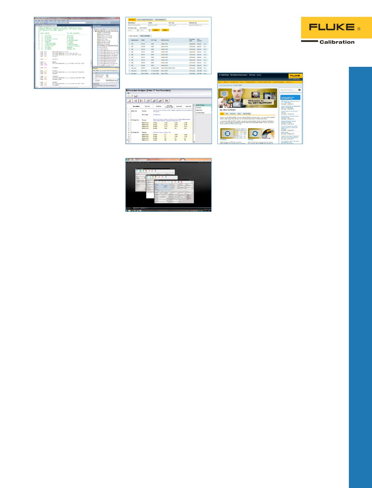

COMPASS for Pressure
COMPASS for Pressure
COMPASS for Flow
Software zur
Druck-/Durch-
flusskalibrierung
COMPASS
®
for Pressure
Universelle Plattform zur
automatisierten Druckkalibrierung.
•
Integrierter Support von
Kolbenmanometern
•
Anwendung von
vollständigen, automatisierten
Kalibrierungssequenzen
•
Unterstützt multiple Prüflinge
•
Automatisiert praktisch jeden
Druckstandard oder Prüfling
COMPASS
®
for Flow
Makroaktiviertes Massenstrom-
Kalibriersoftwarepaket.
•
Vollständig anpassbar
•
Unterstützt Durchflussreferenzen,
die nicht von Fluke Calibration
stammen
•
Führt komplexe
Echtzeitdurchflussberechnungen
aus, und ermöglicht Ihnen die
Abänderung von Testszenarios
auf der Grundlage der
gesammelten Daten
43
Kalibriersoftware